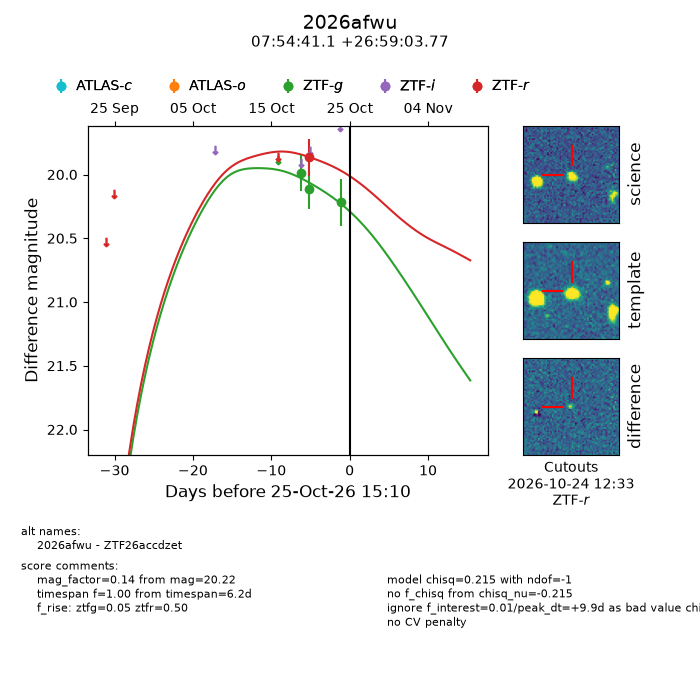
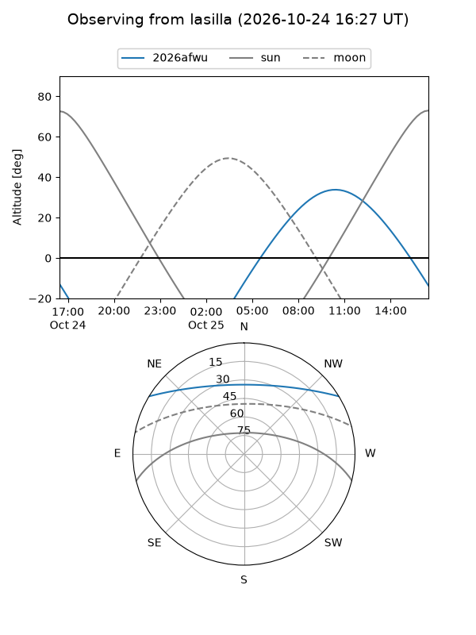
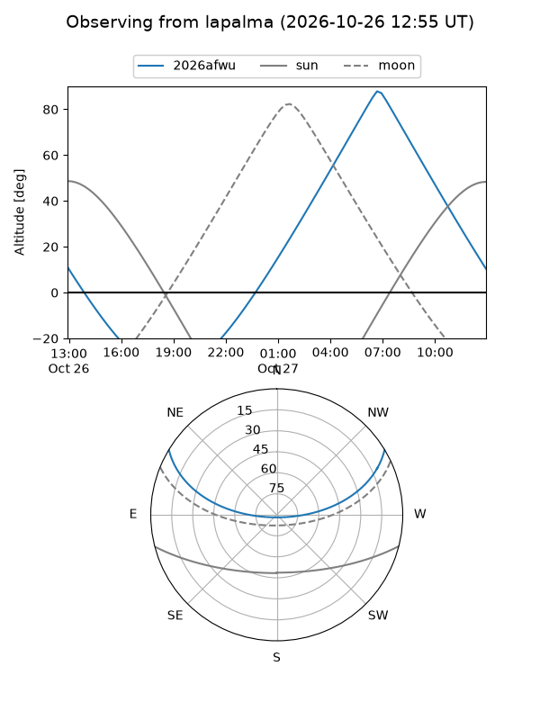
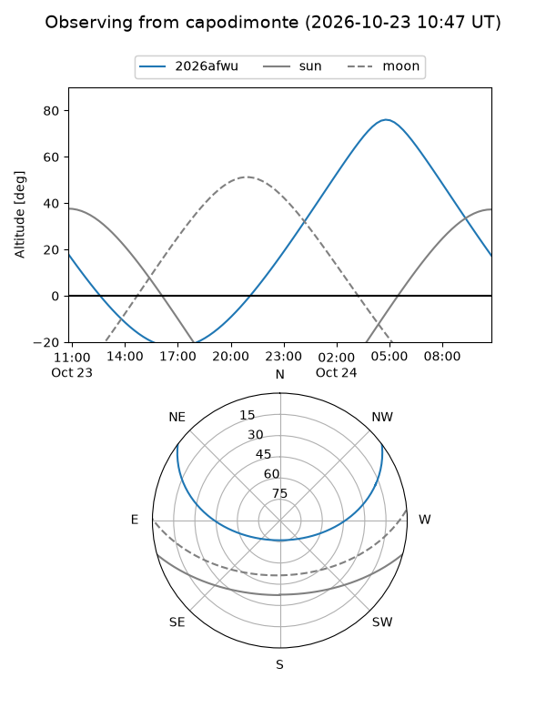
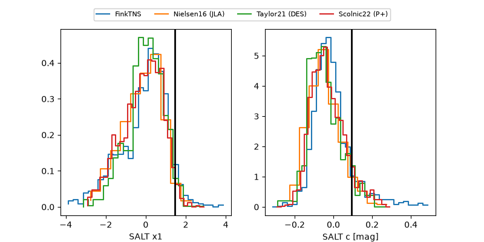

2026afwu
Target 2026afwu at 2026-10-25 15:12
Aliases and brokers:
FINK-ZTF: ztf.fink-portal.org/ZTF26accdzet
Lasair-ZTF: lasair-ztf.lsst.ac.uk/objects/ZTF26accdzet
ALeRCE-ZTF: alerce.online/object/ZTF26accdzet
YSE-PZ: ziggy.ucolick.org/yse/transient_detail/2026afwu
TNS name: wis-tns.org/object/2026afwu
Direct TNS query: direct search
alt names
ZTF26accdzet (ztf,fink_ztf)
2026afwu (tns,yse)
Coordinates:
equatorial (ra, dec) = 118.6712,+26.98438
equatorial (HMS+DMS) = 07:54:41.10,+26:59:03.77
galactic (l, b) = (194.0586,+25.02429)
Flags:
peak dt: +9.9
Photometry:
last ztfg=20.22, ztfr=19.86
3 ztfg, 1 ztfr detections
Lightcurve

Visibility



Additional plots
